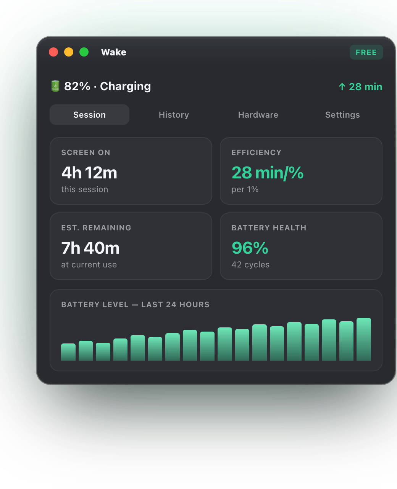
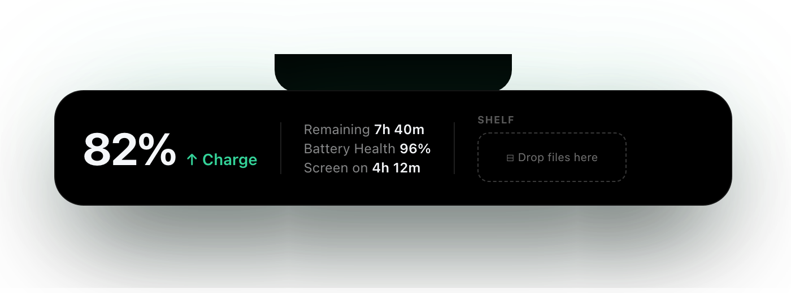

MacWake sits in your menu bar and watches your battery so you don't have to — temperature, fan speed, health decay, charging habits.
3.8 MB · Developer ID signed · Notarized
Open the DMG and drag MacWake to your Applications folder.

On notch MacBooks, MacWake blends into the hardware. Hover to expand — live power, battery health, and temperature at a glance.

Cap charging at 50–95% to cut long-term battery wear. MacWake holds your Mac near the target automatically.
Notified when battery temperature exceeds 38°C — before heat causes permanent capacity loss.
A timeline of your battery's maximum capacity. Watch the trend and know when to act.
Real-time fan RPM. Know when your Mac is working hard — and when it's running silent.
Exact watt consumption in the menu bar at all times. Plugged in or on battery.
Staying at 100% for 24+ hours degrades lithium. MacWake warns you before it accumulates.
Catches sudden 5%+ drops after wake-from-sleep and alerts you to runaway processes.
Hugs the notch, blends with hardware. Hover to expand with a spring animation.
An elegant fullscreen animation when you plug in — like iPhone. Toggle it anytime.
No cloud, no analytics, no account. All data stays on your Mac. Always.
Free download. No sign-up. Open it and it just works.
↓ Download MacWake — Freeor brew install --cask macwake
Requires macOS 14 Sonoma · Apple Silicon & Intel · Notarized